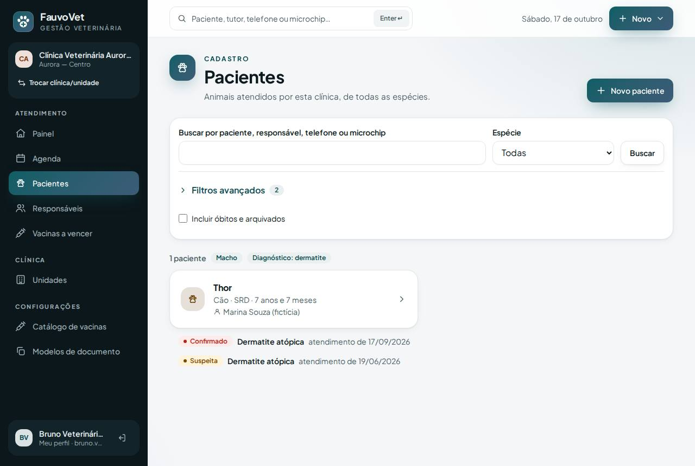
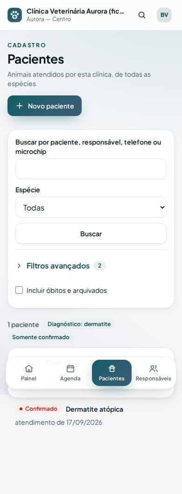

Busca avançada de pacientes: diagnóstico, raça, idade, sexo e ano de atendimento
ID: 2026-10-18-busca-avancada · Data: 18/10/2026 · Versão: 0.10.0 · Módulo: Busca clínica (seção 3), primeira etapa · Estado: implementado e testado localmente; publicação a cargo do proprietário (seção 7)
1. Objetivo
A busca de pacientes já existente ganhou novos filtros. Agora dá para encontrar, por exemplo, "machos com dermatite confirmada", "gatos persas de 3 a 6 anos" ou "quem foi atendido em 2026". Cada resultado mostra qual diagnóstico coincidiu, com que situação e em que atendimento, com link para o registro de origem. Esta busca é a base dos casos científicos (próximo incremento).


2. O que mudou
- Pacientes → Filtros avançados (painel recolhível; o número indica quantos filtros estão ativos). A busca antiga continua igual: nome, responsável, telefone, microchip e espécie.
- Para todos com acesso a pacientes:
- raça (parte do nome);
- sexo;
- castração;
- idade mínima e máxima em anos completos. Quem não tem data de nascimento fica de fora quando a idade é filtrada.
- Prontuário (só a equipe clínica):
- diagnóstico ou código;
- situação: suspeita ou confirmado (padrão), somente confirmado, somente suspeita ou somente descartado;
- ano de atendimento.
- Para todos com acesso a pacientes:
- Regras clínicas:
- só contam atendimentos finalizados: rascunho ainda pode mudar;
- suspeita, confirmado e descartado nunca se misturam e aparecem como etiquetas diferentes;
- acentos e maiúsculas não importam ("atopica" encontra "atópica").
- Segurança:
- para quem não é da equipe clínica (recepção, financeiro), os filtros de prontuário são ignorados no servidor, não apenas escondidos na tela;
- buscas por dado clínico ficam na auditoria (
patient.clinical_search) com os filtros usados e o número de resultados, sem o termo pesquisado; - tudo é restrito à clínica ativa.
- Arquivos:
app/Services/PatientSearch.php(novo; reutilizável);PatientController@index;resources/views/patients/index.blade.php;- testes
tests/Feature/PatientSearchTest.php(5, sendo 1 de isolamento) ee2e/search.spec.ts; - axe na busca com filtros.
Sem migração e sem dependência nova.
3. Pré-requisitos
Os mesmos dos incrementos anteriores.
Git Bash/macOS: NOT RUN.
4. Passo a passo (no seu computador)
cd ~/code/fauvovet→git pull --ff-only→pnpm db:start→pnpm db:seedpnpm dev→ entre comobruno.vet@aurora.exemplo.test→ Pacientes → Filtros avançados.
5. Como testar
pnpm verify --e2e
pnpm test:tenant-isolation- Como Bruno:
- diagnóstico
dermatite atopica: aparece o Thor, com uma linha Confirmado e outra Suspeita, cada uma com a data do atendimento; - situação Somente confirmado: fica só a linha confirmada; clique nela para abrir o atendimento;
- raça
persamostra a Mia, e idade mínima de 6 anos mostra o Thor; - ano de atendimento igual ao atual: aparece o Thor.
- diagnóstico
- Como Carla (recepção): o bloco "Prontuário" não aparece. Se ela digitar
?diagnostico=dermatitena URL, nada é filtrado e nenhum diagnóstico aparece. - Como Diana (clínica B):
dermatitenão encontra o Thor;renalencontra o Jabu.
6. Performance e usabilidade
- Consultas:
- busca com filtros clínicos: 1 consulta com subconsultas
INsobre índices por clínica, mais 2 consultas leves de evidência, só para os 25 pacientes da página; - sem filtro clínico, o custo é o mesmo de antes;
- volume grande e
EXPLAIN: NOT RUN (base fictícia pequena), previsto para a etapa de busca em texto do prontuário.
- busca com filtros clínicos: 1 consulta com subconsultas
- Tela:
- com resultados, o painel de filtros fica recolhido e os filtros ativos aparecem como etiquetas acima da lista, o que no celular deixa o resultado logo abaixo da busca;
- sem resultados, o painel abre para ajustar;
- axe sem violações e conteúdo dentro da tela no celular.
7. Implantação na Locaweb (sem migração)
- Terminal:
pnpm verify --e2e→pnpm deploy:package→pnpm deploy:copiar - FileZilla:
app-fauvovet(tudo excetostoragee.env) epublic_html/fauvovet, com Sobrescrever. - Apenas se o otimizar for necessário:
- Terminal:
pnpm deploy:token; - FileZilla:
DEPLOY_TOOLS_ENABLED=trueno.env; - Terminal:
diagnostico(pending_migrations: 0) →otimizar; - FileZilla: volte
DEPLOY_TOOLS_ENABLED=falsee apaguebootstrap/cache/config.php.
- Terminal:
- Terminal:
SMOKE_URL=https://dradeboragaldino.com.br/fauvovet pnpm smoke
Se a vacinação ainda não foi publicada, use o guia da vacinação: ele inclui a migração, e este pacote já contém as duas entregas.
Sem HTTPS válido, só dados fictícios.
8. Rollback
Reenvie o pacote anterior em .deploy/ e rode o otimizar. Não há mudança de banco.
Local: git revert do commit.
9. Troubleshooting
| Sintoma | Causa e solução |
|---|---|
| Diagnóstico registrado não aparece | O atendimento ainda é rascunho: finalize-o. Se o diagnóstico foi descartado, escolha Somente descartado. |
| Paciente some ao filtrar por idade | Ele não tem data de nascimento; cadastre uma data, mesmo estimada. |
| Recepção não vê "Prontuário" | Comportamento esperado: dado clínico é restrito à equipe clínica. |
| Ano não aparece na lista | A lista começa no ano do primeiro atendimento finalizado da clínica. |
10. Evidências e status
| Verificação | Status | Detalhe |
|---|---|---|
pnpm verify --e2e | PASS | 9/9 etapas |
| PHPUnit | PASS | 156 testes (5 novos de busca) |
| Isolamento | PASS | 38 testes (1 novo: busca clínica A/B) |
| E2E + axe + borda no celular | PASS | busca desktop/celular |
| Busca em texto livre do prontuário (queixa, evolução) e em anexos | NOT RUN | Fase 2: índice de texto completo, sinônimos e destaque de trechos |
| Benchmark com volume | NOT RUN | Base fictícia pequena |
Commit: registrado no docs/PROGRESS.md após a sincronização.
Próximo passo: casos científicos a partir desta busca.